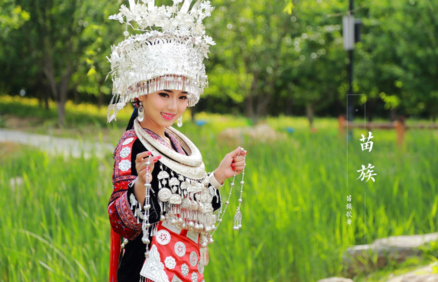

苗族是一个古老的民族，散布在世界各地，主要分布于中国的黔、湘、鄂、川、滇、桂、琼等省区，以及东南亚的老挝、越南、
泰国等国家和地区。
根据历史文献记载和苗族口碑资料，苗族先民最先居住于黄河中下游地区，其祖先是蚩尤，“三苗”时代又迁移至江汉平原，后又
因战争等原因，逐渐向南、向西大迁徙，进入西南山区和云贵高原。自明、清以后，有一部分苗族移居东南亚各国，近代又从这
些地方远徙欧美。
苗族有自己的语言，苗语属汉藏语系苗瑶语族苗语支，分湘西、黔东和川黔滇三大方言。由于苗族与汉族长期交往，有一部分
苗族兼通汉语并用汉文。苗族的宗教信仰主要是自然崇拜和祖先崇拜。
服饰
彭水民间银饰种类繁多，工艺精湛。苗族女人出席宴会或浓重场合时，要在头上插银簪，胸前挂银锁，或者挂缀满挖耳、小刀、
铃铛等饰品的银项链。小孩头戴缀满各型银罗汉的帽子，还在后面悬挂银、铜铃铛。花围腰、花边裤、绣花鞋、花鞋垫、长布帕
等也极有特色。成为重大节日和重要活动的一道风景线。
歌舞
在苗族，青年男女的自娱性集体歌舞多被称为“踩堂”，但由于“踩堂”舞蹈离不开芦笙的伴奏，所以如今“踩堂”这一传统名称已基
本被人们改称为“芦笙舞”了。但为了体现不同地区“芦笙舞”的差异和特色，人们只好又在“芦笙舞”前冠以地区名称加以区分。男
吹芦笙，女作舞，是苗、侗民族的传统习俗。苗族的青年男子，在必须吹得一手好芦笙、能参与集体的“芦笙舞”外，如还能掌握
有着特殊高难技巧的单人或双人表演形式的“芦笙舞”，那他就会成为男性中的佼佼者而更多地赢得未婚女子的青睐。

苗年
苗年，一般在收获季节以后，有的在农历十月亥日，有的在农历九、十、十一月的卯（兔）日或丑（牛）日举行。相当于汉族的
春节。
节日早晨，晚辈将做好的美味佳肴、虔诚地摆在火塘边的灶上祭祖。在牛鼻子上抹些酒以示对其辛苦耕作一年的酬谢。姑娘们身
着色彩鲜艳、风格各异、刺绣镶边或挑花的蜡染衣裤或长短百褶裙，佩戴着引人注目的耳环、手测钏等多种银饰物，与英俊的小
伙子们跳起踩堂舞（男的吹芦笙，女的排成弧形翩翩起舞）。入夜，大铜鼓声传遍整个村寨。外村寨男青年手提马灯吹着笛子来
到村寨附近的“游方”场去游方（又称“坐妹”、“坐寨”、“踩月亮”等，即青年男女的社交恋爱活动），村村寨寨歌声不断。通过
对歌，钟情男女便由定情之物--绣有鸳鸯的锦花带连接在一起。
苗年若与“吃鼓藏”年相遇，更为隆重“鼓”为“大家族”之意，“鼓藏”是由家族人共同举行的祭祖仪式，若干年举行一次，七八年、
十来年不等。“鼓藏”前，将“鼓藏”牛（为鼓藏神喂养三年的大牯牛）排队角斗。届时，大家推举的“鼓藏头”一主持仪式，杀牛祭
祖，还要杀鸡鸭。全鼓的亲戚都要赶来参加，活动持续十余天。
吃新节
也叫“新禾节”。“吃新”是居住在清水江和都柳江中上游的苗族节日之一。没有统一的规定日期。按照习惯，在收获的季节里，找
一块稻谷长势最好的田，大家就在这里欢庆“吃新节”。
相传很古的时候，人间没有谷子，只有天上告呼（雷公）掌管的谷子国有谷子，人们只好打猎为生。为了得到谷种，苗族的老祖
先告劳拿了九千九百九十九种珍禽异兽到谷子国换了九斗九升九碗谷种，放在仓库里，等来年开春播种。可是有一天晚上，胳膊
很长很长的阿乌友，手扒着天边，借着天灯的光，踩着石头，舂蕨粑根，不小心将天灯打翻，恰恰掉落到木板仓顶上。结果起火
，火越烧越大，谷种在仓里哭喊连天，最后乘着烟飞上了天，跑回了告呼家。告劳去找告呼，请他劝回谷种，可是告呼硬说谷种
没上天。没办法，告劳又和告呼商量,再拿九千九百九十九种珍禽异兽去换回谷种。嘴巴磨破了九层皮，嗓子说干了九坛水，告呼
死活不答应。告劳想了九天九夜，终于想出了一条计策：等谷子成熟的时候，派一只狗到稻田里打几个滚，让谷子沾在毛毛上带
回来。古历七月十三日早上,狗要出发了，告劳又交待：要取谷子杆有五尺高、谷穗有五尺长的谷种。但因狗走的太急，到南大
门时，不小心绊了一跤，把告劳交待的话记颠倒了，结果跑到只有五寸长的稻田里,赶忙打了几个滚就往回跑。计策被告呼识破
了，当狗走到天桥时，告呼早派了九十九个彪壮的武士一把守桥头，他们把狗打落到天河里，他们想天河又宽又深，狗只有死路
一条。可他们万万没想到，狗落入天河后赶紧把尾巴翘得高高的露出水面，费了九牛二虎的力气，游过天河回来了，尾巴上还沾
有九粒谷种。告劳有了谷种，赶紧犁田撤种，到了古历六月六日这天，秧尖上抽出了一串狗尾巴一样的谷穗，一个月后，金闪闪
的谷穗成熟了。古历七月十三日，正是取得谷种一年的日子，告劳这天摘了九升谷子，煮了一大锅香喷喷的白米饭。他先舀了三
大碗给狗吃了，然后自己才尝新。剩下的谷种，年年播种，使人们都吃上了白米饭。为了记住取谷种的日子，将七月十三日定为
吃新节，一直传下来。
哭嫁
哭嫁一般从新娘出嫁的前3天或前7天开始，也有的前半个月、一个月甚至三个月就已揭开了哭唱的序幕。不过，开始时都是断断
续续进行的。可以自由地哭。亲族乡邻前来送礼看望，谁来就哭谁，作道谢之礼节。喜期的前一天晚上到第二天上轿时，哭嫁达
到高潮。这段时间的哭唱必须按着传统礼仪进行，不能乱哭。谁不会哭，就会被别人嘲笑甚至歧视。总的来看，哭唱的内容主要
有“哭爹娘”、“哭哥嫂”、“哭姐妹”、“哭叔伯”、“哭陪客”、“哭媒人”、“哭梳头”、“哭祖宗”、“哭上轿”等。“歌词”既有一代代
流传下来的、传统的，也有新娘和“陪哭”的姐妹们即兴创作的。内容主要是感谢父母长辈的养育之恩和哥嫂弟妹们的关怀之情；
泣诉少女时代欢乐生活即将逝去的悲伤和新生活来临前的迷茫与不安。也有的是倾泄对婚姻的不满，对媒人对自己乱定终身的痛
恨与无奈等等。